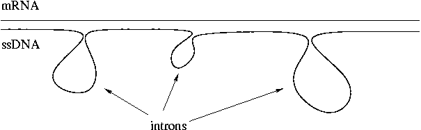

Day 4 Morning Lecture Notes
Steve Williams, Smith College
June 9, 2004
Our XL-1 Blue strain grew unusually slowly. This may be due to a problem with the batch of cells or due to miscalibration of the new spectrophotometer. Too high a concentration of cells will cause them to grow more slowly.
RT-PCR is a way of looking at gene expression. In our experiment 3, the question to be answered is, in liver cells from mouse, is the transthyretin (Ttr) gene expressed? First we will answer the question qualitatively, then quantitatively.
Total RNA can be used to look at the expression of the Ttr gene. Ttr is a blood transport protein that was formerly called Tth and prealbumin (PAL). A point mutation in the Ttr gene causes a disorder called amyloid neuropathy. We will use reverse transcriptase from a retrovirus (a mouse mammary tumor virus). Reverse transcriptase is a DNA polymerase that synthesizes DNA from an RNA template. Thus it requires a primer (and only one) to make ssDNA. There are two possible choices of primer:
Reverse transcription always requires a reverse primer since the mRNA has the same sequence as the coding DNA strand. One advantage of a specific primer is that it contains some of the stronger C-G triple bonds and will bind more stably. In contrast the poly-A tail binding has only A-T double bonds.
After hybridization, heat to 90-95°C in order to kill the reverse transcriptase and denature the ssDNA from the mRNA. At this point there is a DNA template that can be amplified once Taq polymerase and DNA primers are added. The first cycle in RT-PCR copies only one strand. After that the reaction proceeds normally.
We will take the RT-PCR product and run a gel to look for a band corresponding to the molecular weight (MW) of the Ttr gene. This gel provides the yes/no answer about gene expression that we are seeking. Note that for this experiment the primers don't have to span the entire gene of interest, only a long enough segment to recognize the DNA in the gel. For many years the Northern Blot method was used to qualitatively determine gene expression but RT-PCR is faster and more sensitive.
The human genome has 3-4x104 genes, some of which are expressed only during fetal development.
Unlike prokaryotes, eukaryotes have exons and introns in their genes. Exons are expressed (coding) and introns are not expressed (non-coding). Some genes have more than 100 introns. For the more advanced species, introns are much longer than exons. In the case of Ttr, less than 10% of the sequence is exons.
The initial transcript of a gene is pre-mRNA. For Ttr the pre-mRNA is 8 kbp long. Pre-mRNA is processed in the nucleus in three further steps:
The resulting product is now mRNA proper. For Ttr the mRNA is 700 bp, considerably shorter than the pre-mRNA. The mRNA can leave the nucleus and proceed to translation.
Rich Roberts of New England Biolabs is the Nobelist who co-discovered introns. He and coworkers found introns by hybridizing mRNA to ssDNA and observed loops in the product corresponding to introns. Introns are a mixture of specific and non-specific sequences. Repetitive sequences may be present.

If we use cDNA as a probe for genomic DNA, the presence of introns doesn't disturb hybridization. 20 bp of matching sequence is enough for a probe to hybridize. In experiment 3 we use a forward primer and reverse primer to see a 150 bp product for Ttr in the gel.
If genomic DNA from liver cells contaminates the mRNA sample, the amplified product will be about 1100 bp long due to inclusion of an intron. When selecting primers for RT-PCR, make sure that they originate on different exons in order to make the distinction between gene expression (via mRNA) and DNA contamination.
"Alternative splicing" can omit certain exons during the pre-mRNA --> mRNA transition. Thus one gene can code for several different proteins intentionally. Note that the start and stop codons for translation are not at the exact ends of the mRNA. Thus the whole transcript is not translated. Splicing cues for mRNA include not only the sequence itself but also the secondary structure. Similarly, cDNA copies of genes put into a live cell will be expressed normally although it's not clear if they are regulated properly.
The number and location of human genes within the genome is not fully known. The situation is similar for other eukaryotes whose genome has been sequenced. cDNAs are one important source of clues. Of course genes expressed only during one phase of development may not have cDNAs even though they are perfectly valid genes. Finding all the human genes may take another 10-20 years. In eukaryotes the sequences of promoters are more variable than in prokaryotes. Otherwise looking for promoters would be an easy way of finding genes. Comparative genomics (between species) is another powerful way of finding genes.
Mice have more intraspecies variability than humans due to the newness of the human species. Subtle differences in regulation account for most of the human-chimp differences since genomic distinction is <1%.
Up Previous Next